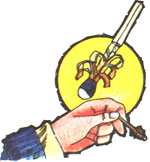
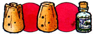
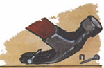
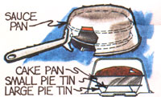
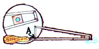
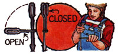
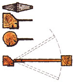
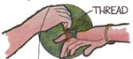
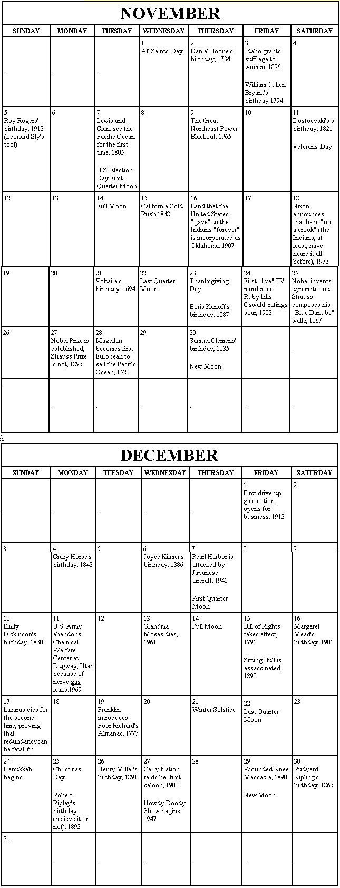

If you've ever tried to start a fire in a heavy wind that blows out one match after another, you know what frustration is. When you only have one match with you, however, the situation can be much more than just an irritation.
Next time you face that problem, take a knife and shave the wood near the tip of your fire starter into a fringe as shown in the illustration. The curled shavings will catch and hold a flame much more readily than would an unwhittled match stick.
Sooner or later it happens to most everybody . . . there's a small bottle to be plugged and every cork in the house is too durn big.
Here's a solution: Cut two deep wedges-at right angles to one another-from the bottom of the stopper. Then, wet the cork slightly, squeeze the "points" together as in the drawing, and stick it-easily-into that pesky little bottleneck.
Those stubborn staples can be taken out of fenceposts (or almost anything else, for that matter) as "easy as pie" with a regular claw hammer and a nail. Just slip the little spike through the top loop of the stuck fastener (as in the drawing), get a "hook" on both sides of it, and pull away!
Outdoor baking is an art . . . and folks who can whip up such things as cakes and muffins in a camping situation are few and far between. With a little experimentation, though, you can turn out such goodies on an open-flamed stove . . . using nothing but an "extra pan oven" positioned over one of the burners.
To try this trick (it'll work in the house, too, if you happen to have a gas stove with a nonfunctioning oven) you'll need two pie tins-one a good bit smaller than the other-your cakepan, and a saucepan large enough to cover the whole setup and leave room for the rising cake.
Arrange the pans as shown in the accompanying drawing. Start "baking" over a high flame (and do check the cake regularly . . . at least the first few times you try this idea) and gradually decrease the heat until your confection is done. This oughta work for pies, tarts, and other oven yummies, too.
Every mechanic or home handyman knows that-more often than not-the nut or bolt you have to remove will require the-and only the-wrench which the youngsters lost the day before.
But don't despair. For here's a versatile tool that will fit and remove a whole range of stubborn fasteners. And it can be fabricated from little more than a piece of square steel bar.
Just shape the "wrench" as shown, and weld the joint at [A]. Then, either fit an old handle to it or wrap the butt with tape to protect your hands.
Of course, the dimensions of the sides-and the angle of the bend at [B]-will be determined by the size range of obstinate hardware that you most often encounter.
Every once in a while we all encounter a screw-either rusted in place or just plumb stuck-that a team of dray horses couldn't loosen. Working at it in frustration with a regular tool will like as not strip out the fastener's head slot . . . and set the whole operation back two squares.
A homemade screwdriver that provides enough leverage to (sometimes) free those stubborn fasteners, however, can be fashioned from 5/16-inch steel rod.
Form the two handles alike, as illustrated, and either weld or forge a screwdriver head onto one tip. Then flatten both handles slightly at their centers, drill 'em, and use a small screw, bolt, or rivet to hold them together. Normally you'll keep the extra handle folded up alongside the other one. But when a screw decides to get contrary . . . just pull down the lever handle and have at it!
Ordinary hinges can-with a little modification-be used to hang a gate that will open in either direction.
First, bend the "post side" of the pivots (as shown in the illustration) and attach 'em so that the hinge pins will be on a line roughly between the centers of the two gateposts. Then, screw the "joiners" to the door in the usual manner. And, finally, bevel off any surfaces that might interfere with the movement of your "two-way closure".
A translucent material-which looks like parchment and is every bit as durable-can be made from ordinary cotton- or linen-based white paper.
All you have to do is soak the unmarked sheets in a solution of camphor and alcohol. (Make sure you dissolve as much of the crystalline substance in the liquid as it will hold . . . and wash your hands well after you`ve finished!)
Once it dries, this "poor man's isinglass" can be used to make lampshades or-when dyed-an attractive imitation stained-glass window.
When you crave a cup of java and-for one reason or another-your percolator of "Mr. Caffeine" is elsewhere (or when you don't want to brew up a whole pot for just one serving), a plain old styrofoam "hot cup" is all you really need.
Just cut four small holes (1/8 inch across or so) in the bottom of the plastic tumbler. Then, line the inside of the container with a dripmachine filter-or a clean white paper towel-and add a couple of tablespoons of ground coffee. Finally, hold your "homemade espresso pot" over a suitable receptacle and (watch your fingers, now) fill it with boiling water. The finished brew will then drizzle through the openings in the foamed cup's bottom and into your mug
Removing a ring can sometimes be a problem . . . especially when changes in temperature or humidity have caused the finger it's on to swell. A string or thread, though, can sometimes do the job when the usual soap treatment fails.
Run one end of a length of thread or light string under the hand ornament . . . and wind the other end-in tight, closely spaced coils-down the finger and over the knuckle. It's then usually a simple matter to slip the offending bauble off over the wrapping. And if that doesn't work, grasp the loose end of the thread (the one pointing toward your palm) securely in your other hand, pull the "tail" up against the back of the ring, and-while exerting continued "forward" pressure on the wrapping-start to uncoil it from around the finger. As the thread unwinds, it should gently push the ring ahead of it . . . right off over the knuckle!
|
 |
 |
 |
|
 |
 |
 |
|
 |
|
 |
|
 |
|
|